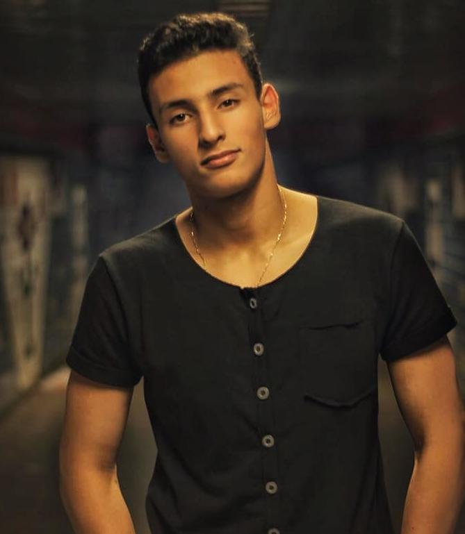

↑ Voltar ao topo
↓ Participantes de 2020
↓ Participantes de 2019
↓ Participantes de 2018
↓ Participantes de 2017
↓ Participantes de 2016
 | Gabriel Eduardo de SouzaParticipante 2020 Currículo Lattes |
|  | Gabriel Ricardo Ramos de MoraesParticipante 2020 Currículo Lattes |
 | Giovani Liskoski ZaniniParticipante 2020 Currículo Lattes |
| Gustavo Marinho Lioi NascentesParticipante 2020 Currículo Lattes |
 | Luiz Cirilo Tomasi NetoParticipante 2020 Currículo Lattes |
| Mirele Florentino PereiraParticipante 2020 Currículo Lattes |
| Thayná Ribeiro de SouzaParticipante 2020 Currículo Lattes |
Vinícius Nunes Benfica dos SantosParticipante 2020 Currículo Lattes |
| Ana Luiza MichelParticipante 2019 Currículo Lattes |
Vinicius TeixeiraParticipante 2017,2018,2019 |
| Andrei Leite De FreitasParticipante 2017,2018 Currículo Lattes |
Iago HermenegildoParticipante 2017,2018 | |
José Honório JuniorParticipante 2017,2018 Currículo Lattes | |
| Lucas Rudolf Battist ArcherParticipante 2017,2018 |
Vinicius TeixeiraParticipante 2017,2018,2019 |
| Andrei Leite De FreitasParticipante 2017,2018 Currículo Lattes |
Iago HermenegildoParticipante 2017,2018 | |
José Honório JuniorParticipante 2017,2018 Currículo Lattes | |
| Lucas Rudolf Battist ArcherParticipante 2017,2018 |
Vinicius TeixeiraParticipante 2017,2018,2019 |
| Oscar Ferreira dos Santos JuniorParticipante 2016 |
| Wesley Rosa da CostaParticipante 2016 |